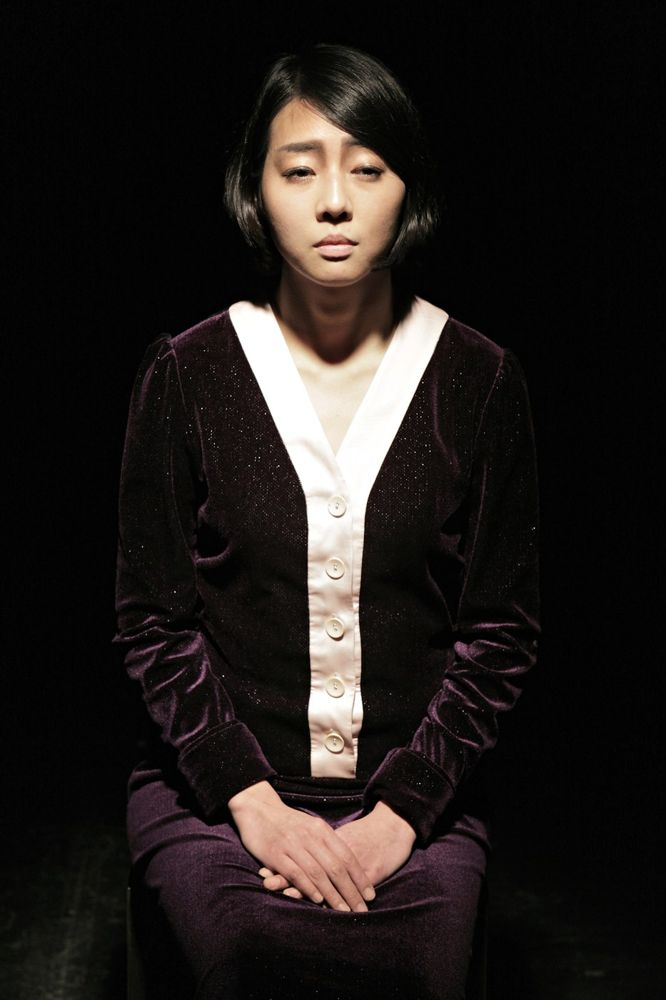

Green Pig > Archive > Unwanted, Na Hye-seok

The second work in Green Pig's "artist series," which looks into the lives of Korean artists. After Anyway, Baek Seok, it takes up Na Hye-seok, Korea's first Western-style woman painter and an artist rejected by her time, as a monodrama. In the life of Na, who went from a rising painter to a thinker who rebelled against male society and to a homeless invalid abandoned by everything, it focuses on the contradictions shown by the gap between her ideas and her work. Selected for the Gyeonggi Cultural Foundation's promising artist project.
2012.11.16–18 / Ansan Arts Center
2012.12.5–9 / Theater Lab Hyehwa-dong 1beonji
2013.4.4–7 / Incheon Art Platform
2013.5.24, 27 / Donggang Middle School, Miryang, Naega Elementary School, Ganghwa - Exciting Art Journey touring program
Playwright & Dramaturg: Kim Minseung
Director: Yoon Hansol
Cast: Jeon Seonu
Music: Min Gyeonghyeon
Lighting: Choi Boyun
Costumes: Lee Yuseon
Assistant director: Park Hyunji
Previous: Garden Killer | Next: Tree Won't Seek for Shoe Store
Back to the archive | Any work
Published 2026.11.13